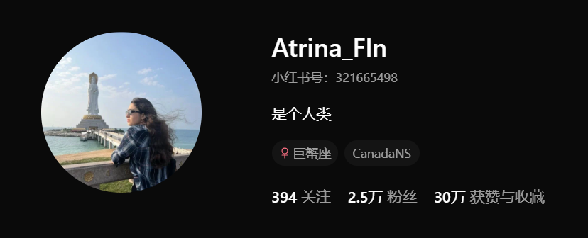

Beyond photography, I also explore video creation and audio storytelling. These projects reflect my interest in communication, visual narrative, and digital expression.
This short audio excerpt reflects on perspective, creativity, and human-centered design.
Click the image below to visit my Rednote page.
